ภูเขาไฟหลับ
ดูบนแผนที่และวิธีไป วางแผนฟาร์ม
ทุ่งในแดนใต้สีแดง · Lv 70–79
ชั้นล่าง / ดันเจี้ยน
เดินต่อไป
มอนในแมพ (6)
| มอน | Lv | ในแมพ | ธาตุ | โซน |
|---|---|---|---|---|
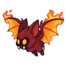 ค้างคาวเปลวไฟ | 70–80 | ≈34 | ไฟ | สุสานมังกร |
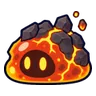 สไลม์ลาวา | 70–75 | ≈30 | ไฟ | |
| 74–82 | ≈27 | ไฟ | สุสานมังกร | |
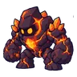 โกเลมลาวา | 74–82 | ≈15 | ไฟ | สุสานมังกร |
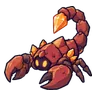 แมงป่องแดง | 74–79 | ≈13 | ไฟ | |
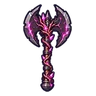 ดราโกส นักรบคลั่งลาวา บอสผู้ถูกรากสิง | 86–86 | 1 | ไฟ |
≈ จำนวนที่อยู่ในแมพพร้อมกันโดยเฉลี่ย คิดจากไฟล์เกม (จุดเกิดของแมพ × 4 แบ่งตามสัดส่วนของแต่ละตัว) ตายแล้วเกิดใหม่ที่เดิมใน 22 วินาที · ตอนเล่นออนไลน์เซิร์ฟเวอร์เป็นคนเกิดมอน อาจไม่ตรง
อุปกรณ์ที่ดรอปในแมพนี้
| ของ | โอกาสสูงสุด |
|---|---|
| ขวานใหญ่ออบซิเดียนราก | 0.5% |
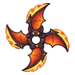 ดาวยักษ์ปีกค้างคาวเปลวไฟ | 0.25% |
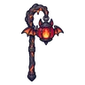 ตะเกียงค้างคาวเปลวไฟ | 0.25% |
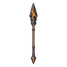 หอกยาวลาวาเย็น | 0.25% |
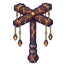 ไม้เชิดหุ่นหินลาวา | 0.25% |
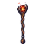 คทาถ่านคุ | 0.25% |
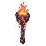 คบเพลิงหินลาวา | 0.25% |
| 0.25% | |
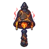 กระดิ่งวิญญาณหินแมกมา | 0.25% |
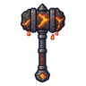 ค้อนยักษ์แกนโกเลมลาวา | 0.25% |
| 0.25% | |
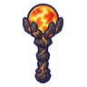 ออร์บแกนแมกมา | 0.25% |
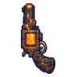 ปืนพกคู่โกเลมลาวา | 0.25% |
| เกราะแสงเหนือ | 0.15% |
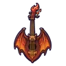 เครื่องดนตรีค้างคาวเปลวไฟ | 0.12% |